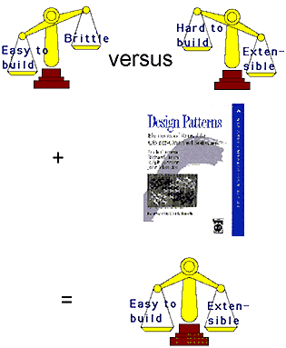

TU2
Tutorial
Monday 1115-1230
Patterns: what, why, and how
Richard Mitchell and Franco Civello
University of Brighton
A 75-minute tutorial on patterns.
Who's it for?
The tutorial is aimed at people who have heard the noise about
object-oriented design patterns (such as those in the book by Gamma et al) but who have not yet looked at individual patterns, or how they might be used in a particular design.
What's the point of patterns?
Here's a picture (followed by the 100 words it's worth).

Software design often involves trade-offs. For example, you could design a piece of software
so that it was really easy to build, but quite hard to extend to meet future requirements. Or, you could use more
sophisticated techniques that made it harder to build, but easier to extend thereafter.
Sometimes, it is possible to lessen the effect of this kind of trade-off by doing some work at a strategic level. Here are some examples:
- build a user interface using a GUI-builder
- build a workflow system using a workflow language
- build a DP system using SQL
- build any program using design patterns.
The diagram illustrates the last example.
How will the tutorial work?
We'll take you through the design of parts of a drawing editor,
asking you to think about the design choices along the way,
and to make suggestions for improvements.
Then we'll show how using well-understood patterns makes the
design quicker and
easier to do, and easier to discuss with colleagues.
For the examples, we'll use UML class diagrams and some C++/Java-style code.
Key topics
We'll cover:
- The idea of a pattern
- Three specific patterns
- Template pattern
- Factory method pattern
- Strategy pattern
- How common software mechanisms can be implemented in common code
- How algorithms can usefully be turned into objects
What will you go away with?
You'll be given
- a small catalogue of patterns
- screen shots of the editor at work
- outlines of designs that use patterns
- a short list of sources of more information.
Less tangibly, we hope you'll go away feeling confident to start exploring the literature of patterns, and to start thinking about where to use them in your own work.
Who are the presenters?
Richard Mitchell
and
Franco Civello
are members of the
IT Faculty
at the
University of Brighton.
They've been teaching and carrying out research into object technology since about 1990. They also have many satisfied commercial clients.